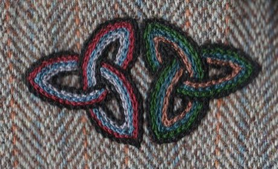
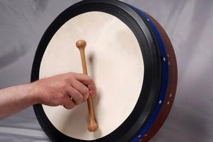
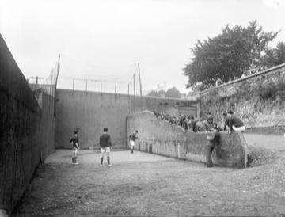
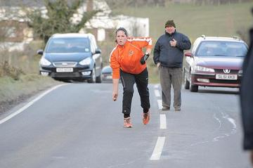

Home / Living Traditions / Celtic and Atlantic Europe
Playable heritage gameCeltic knot weave
Also known as Celtic knotwork
Celtic knotwork is the art of interlaced cords that pass over and under one another with no beginning and no end, carved in stone, worked in metal and drawn on the pages of early illuminated books.


How to play
- Choose a colour and a motif from the strip under the panel.
- Tap a square to place it: the same motif appears on the matching squares all round the panel.
- Copy the small design above the panel, then press Check.
Rules at a glance
- The panel is symmetric in four directions and across both diagonals, as knotwork bands are.
- A square counts only when its motif and its colour both match the design.
- Three stars need a nearly perfect copy; you can undo or clear as often as you like.
About the tradition
Interlaced patterns of this kind were made across early medieval Ireland and Britain, on carved stone, metalwork and manuscript pages, and are still drawn, carved and embroidered today.
Origins
A living tradition passed from person to person; it is not tied to a single dated origin. It belongs to the cultural world of Celtic and Atlantic Europe.
Credits
- Pattern design: World Heritage Games (original)
- Photo: PKM, CC BY 2.5, source on Wikimedia Commons
- Text: CC BY-SA 4.0, World Heritage Games.
Sources

Get the app
Celtic knot weave is one of 17 textile crafts in the Textile Crafts of the World app for iPhone, iPad and Android. Submitted to the App Store and Google Play; in review. Store links appear here the day it goes live. One app, many traditions, no account needed.
More games to play

Nordic Colourwork Knitting
United Kingdom +2 · Crafts and makingPlay preview · in the Textile Crafts of the World app
Tartan Sett Weaving
United Kingdom +1 · Crafts and makingPlay preview · in the Textile Crafts of the World app
Cross-Stitch Pattern Weaving
Ukraine · Crafts and makingPlay preview · in the Textile Crafts of the World app

Sashiko Stitch Patterns
Japan · Crafts and makingPlay preview · in the Textile Crafts of the World app
Adire indigo resist dyeing
Nigeria · Crafts and makingPlay preview · in the Textile Crafts of the World app
More from Ireland


Croquet
United Kingdom +2 · Board and table games
Frisian Road Bowling
Ireland +2 · Dexterity and skill games

Irish Handball
Ireland · Crafts and making
Road bowling
Ireland · Street and playground games